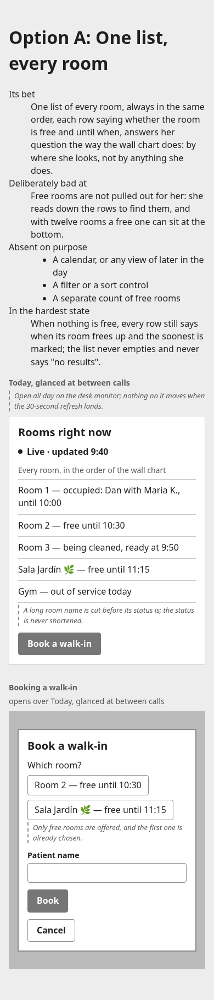

A One list, every room
One list of every room, always in the same order, each row saying whether the room is free and until when, answers her question the way the wall chart does: by where she looks, not by anything she does.


Option B: Free rooms first
The usability judge, the profile judge and the primary reader each put B first, and the contrast reader put it second.
Which structure goes on to Detail: A, B or C?